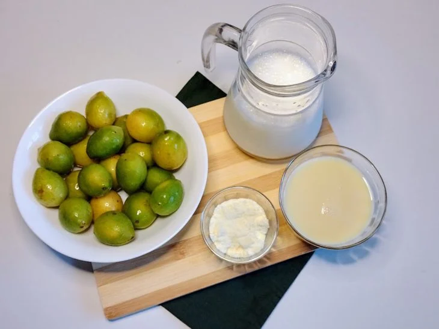
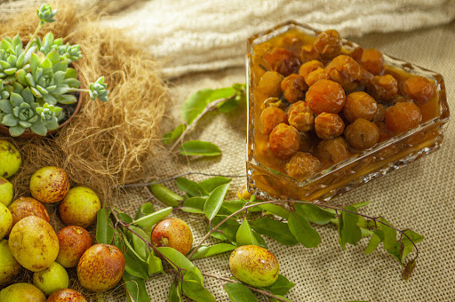
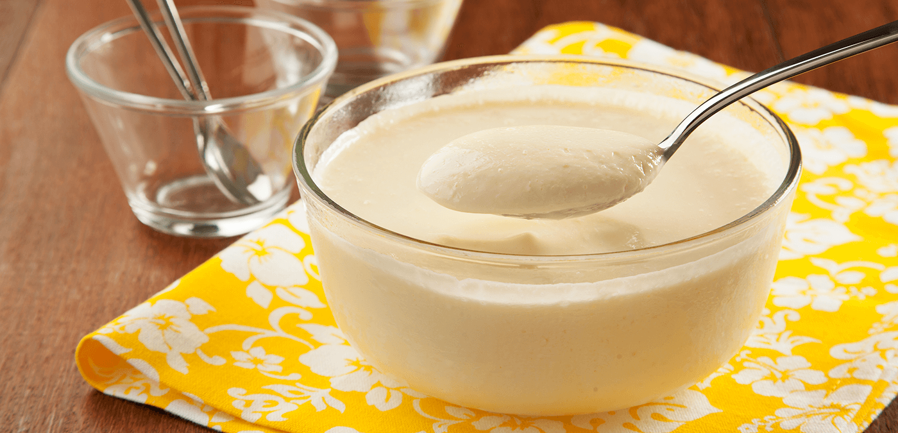
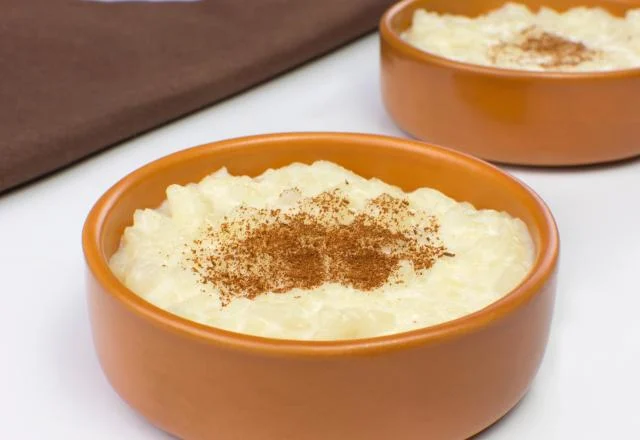
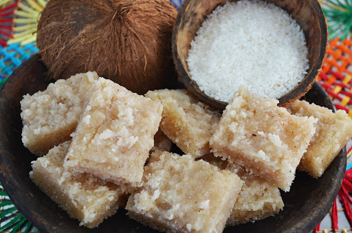
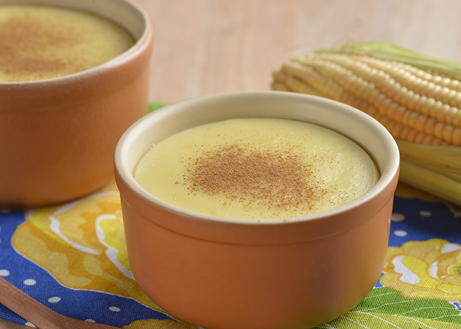
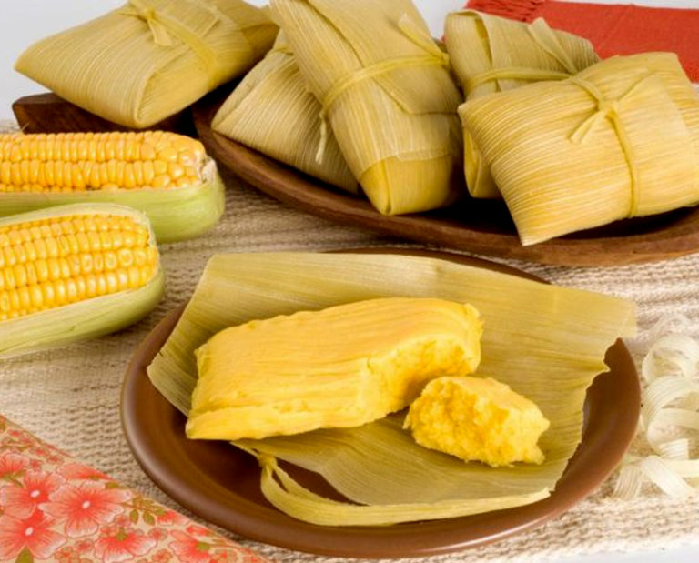

Confira abaixo as sugestões de pratos.
Umbuzada
Uma explosão de sabor nordestino.
Canjica Nordestina
Milho branco cozido com leite de coco, açúcar e amendoim.
Doce de Mangaba
Doce típico da região nordeste feito com o fruto da mangabeira.

Mousse de Caju
Uma mousse suave com o sabor do caju, uma fruta típica do Nordeste.
Arroz Doce Nordestino
Arroz cozido com leite de coco, canela e cravo.
Cocada
Doce de coco tradicional, com um toque de leite condensado.
Curau de Milho
Creme doce de milho verde, servido frio.
Pamonha
Milho verde cozido, doce ou salgado.